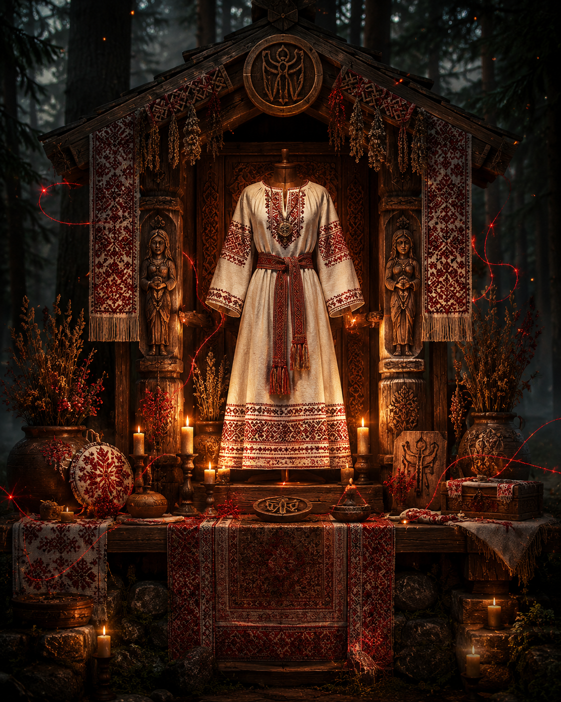
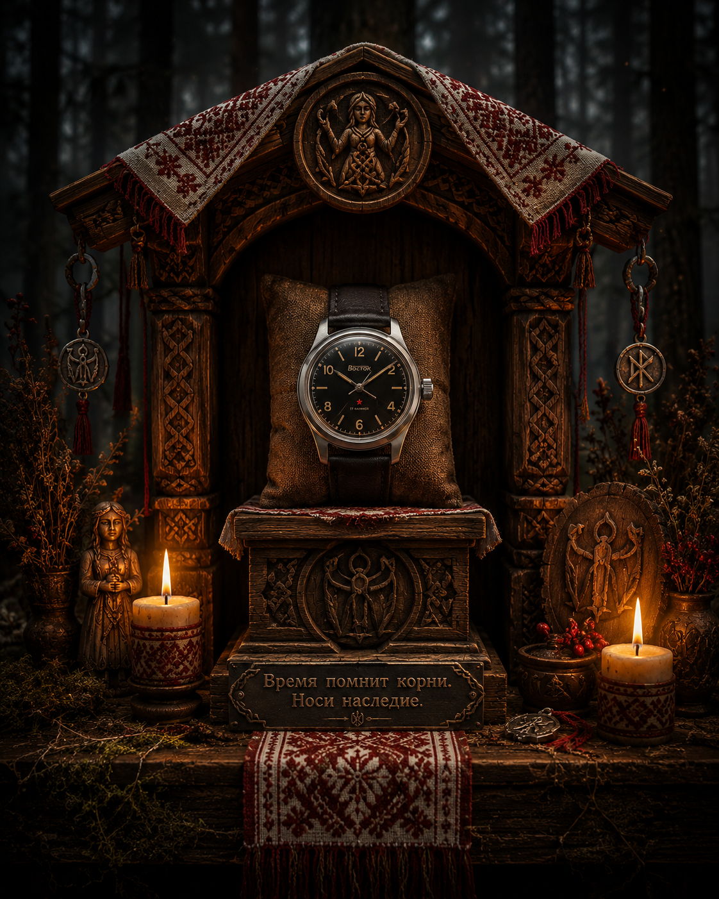
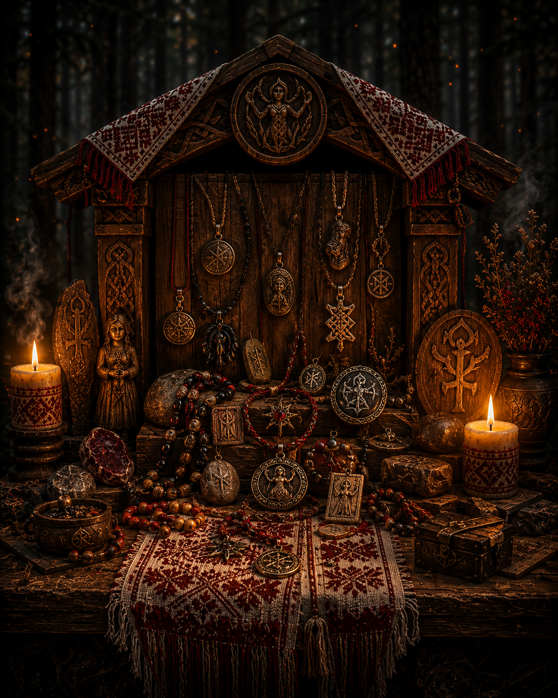
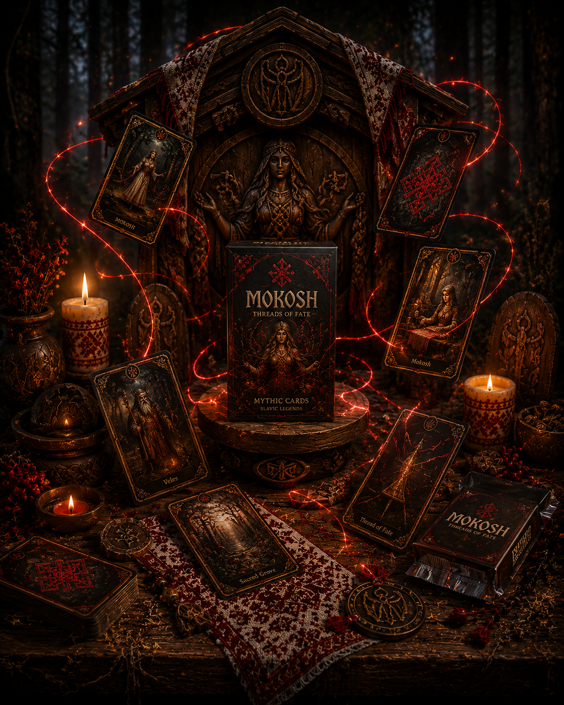
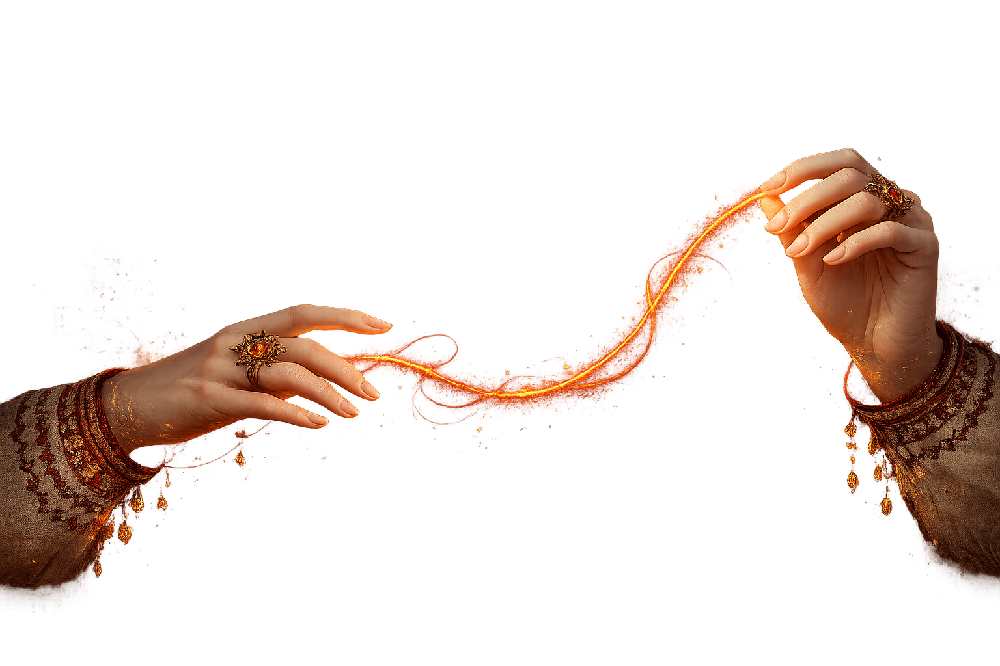
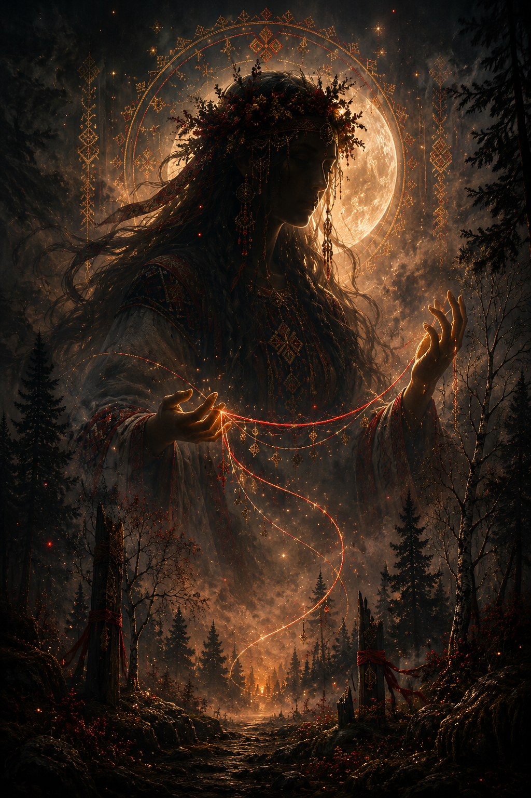
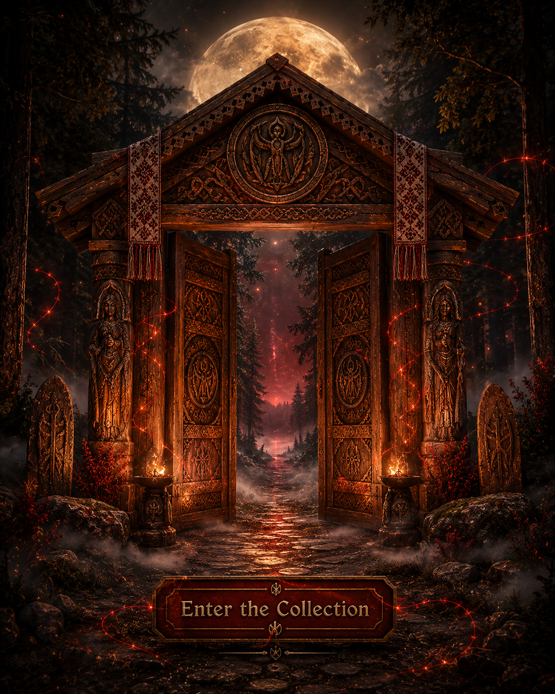

Slavic-inspired apparel · relics · watches · mythology cards
Enter the Forest of Mokosh
A cinematic collection of old-world symbols, sacred craft, vintage Soviet pieces and mythic card art.
Shrine I
Threads of the Old Forest
Traditional Slavic-inspired clothing, embroidered textures, ritual silhouettes and story-rich designs for a modern wardrobe.
Visit Clothing →

Shrine II
Watches from Another Era
Vintage Soviet and Vostok pieces selected for character, patina, history and presence.
Visit Watches →Shrine III
Relics, Charms & Small Wonders
Handcrafted Slavic necklaces, keepsakes, vintage objects and symbolic pieces that feel unearthed from a half-forgotten story.
Visit Relics →

Shrine IV
Mokosh Cards
175 Slavic mythology cards and a growing Singapore legends collection, designed as a world of gods, spirits, heroes and monsters.
Visit Cards →

The Thread Connects All Things
One world. Four shrines. Many relics.
Move from apparel to watches, from relics to cards, through a single mythic homepage built for atmosphere and discovery.
